The Parable Of The Wedding Feast
And Jesus answered and spake unto them again by parables, and said,
The kingdom of heaven is like unto a certain king, which made a marriage for his son,
And sent forth his servants to call them that were bidden to the wedding: and they would not come.
Again, he sent forth other servants, saying, Tell them which are bidden, Behold, I have prepared my dinner: my oxen and my fatlings are killed, and all things are ready: come unto the marriage.
But they made light of it, and went their ways, one to his farm, another to his merchandise:
And the remnant took his servants, and entreated them spitefully, and slew them.
But when the king heard thereof, he was wroth: and he sent forth his armies, and destroyed those murderers, and burned up their city.
Then saith he to his servants, The wedding is ready, but they which were bidden were not worthy.
Go ye therefore into the highways, and as many as ye shall find, bid to the marriage.
So those servants went out into the highways, and gathered together all as many as they found, both bad and good: and the wedding was furnished with guests.
And when the king came in to see the guests, he saw there a man which had not on a wedding garment:
And he saith unto him, Friend, how camest thou in hither not having a wedding garment? And he was speechless.
Then said the king to the servants, Bind him hand and foot, and take him away, and cast him into outer darkness, there shall be weeping and gnashing of teeth.
For many are called, but few are chosen.
Matthew 22:1-14
- 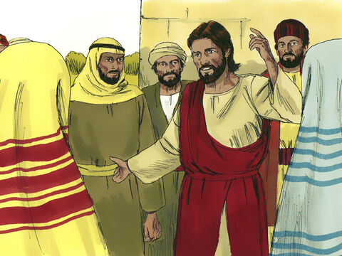
- 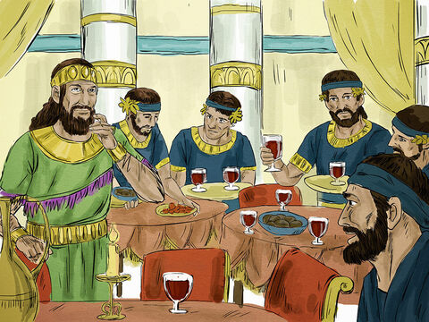

- 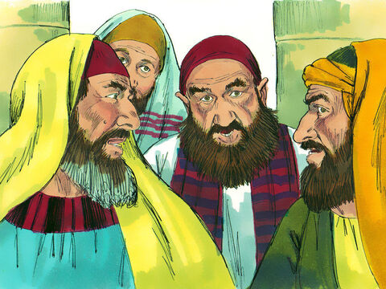
- 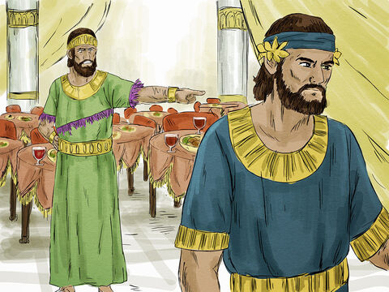
- 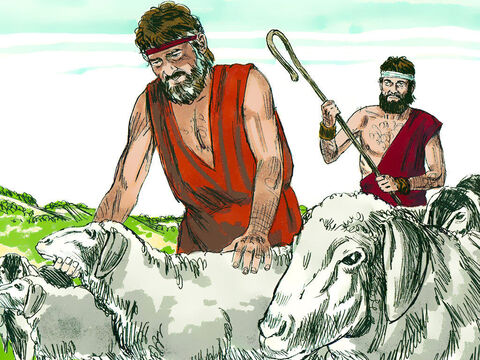
- 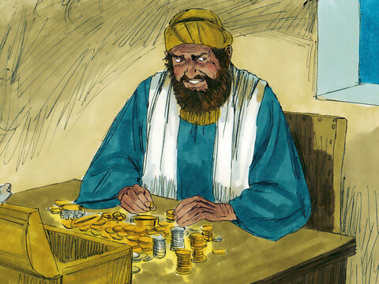
- 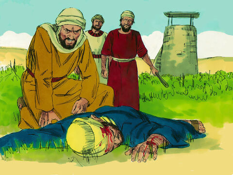
- 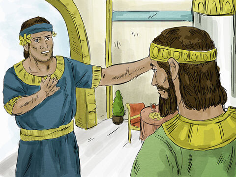
- 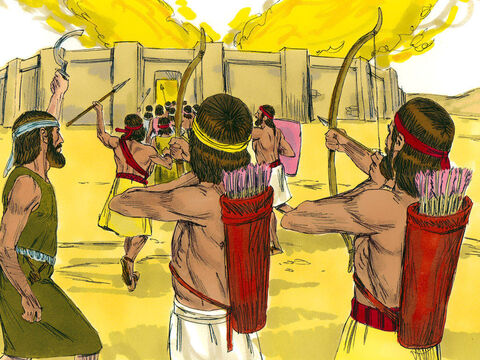
- 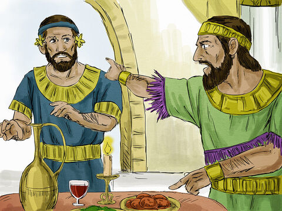
- 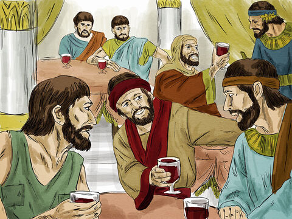
- 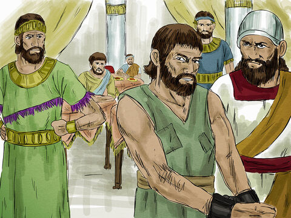